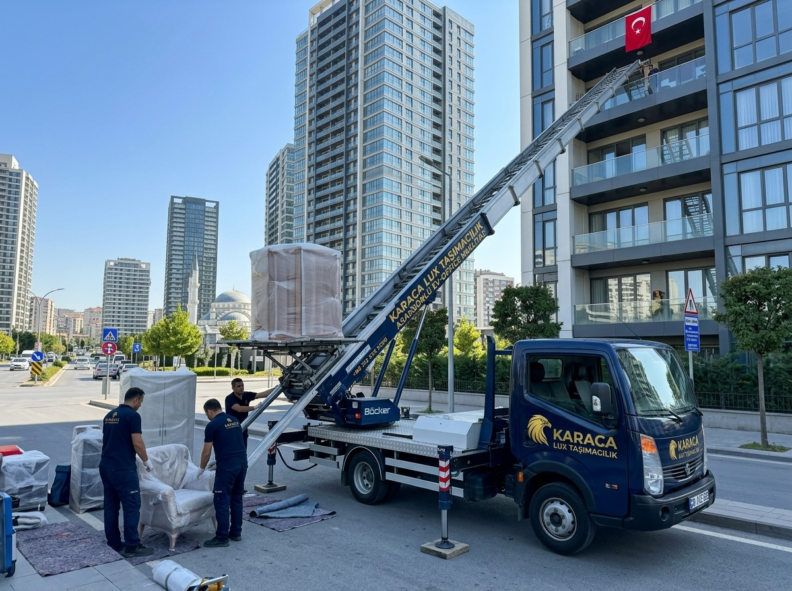

KARACA LUX
TAŞIMACILIK & LOJİSTİK
Ankara ve Diyarbakır (Kayapınar, Bağlar, Yenişehir, Sur) arasında 15. kata kadar hidrolik dış cephe asansörlü, VIP ambalajlı, marangozlu ve 10 Milyon TL nakliyat sigortalı anahtar teslim taşımacılık.
Rezidans ve sitelerde bina içi merdivenleri kullanmadan, modüler hidrolik asansörümüz ile balkonunuzdan doğrudan yükleme ve boşaltma yapıyoruz.
75 Metre Yol, Diclekent, Gaziler ve Mastfroş Caddesi'ndeki yüksek katlı site ve rezidanslarda 15. kata kadar dış cephe asansörlü taşıma.
Ofis Semti, Ekinciler Caddesi, Şehitlik ve Vilayet bölgesinde dar sokaklara uygun kompakt mobil asansörlü araçlarımızla hızlı kurulum.
Bağcılar bölgesi yeni konut projeleri, Göletli Park civarı ve Bağlar genelinde uzman marangozlu demontaj ve montaj hizmeti.

980 kilometrelik Ankara - Diyarbakır hattında eşyalarınız çelik kapalı kasa, süspansiyonlu tırlarımızda özel sabitleme gergileriyle taşınır.
Tüm mobilyalar, beyaz eşyalar ve koltuk takımları çizilmeye ve toza karşı kalın pet naylonla sarılır.
Yatak odası takımı, ray dolap ve mobilyalarınız sökülüp Diyarbakır'daki yeni evinizde oda oda monte edilir.
Taşınma öncesi 10 Milyon TL'ye kadar tam kapsamlı kasko poliçesi düzenlenir.
Fiyatlarımız kat durumu, asansör ihtiyacı ve eşya hacmine göre sözleşmeli olarak sabitlenir. Taşınma günü sürpriz masraf çıkmaz.
| Daire / Eşya Tipi | Ortalama Fiyat Aralığı | Dahil Olan Hizmetler | İşlem Süresi |
|---|---|---|---|
| 1+1 Daire Taşıma | 19.000 ₺ - 24.000 ₺ | Paketleme + Çelik Kasa Sevkiyat + Sigorta | 24 Saat |
| 2+1 Daire Taşıma | 23.000 ₺ - 29.000 ₺ | VIP Kraft Ambalaj + Marangoz Montaj + Sigorta | 24-36 Saat |
| 3+1 Standart Konut | 27.000 ₺ - 35.000 ₺ | Anahtar Teslim Paketleme + Asansör + Marangoz + Kasko | 24-36 Saat |
| 4+1 & Dubleks Konut | 34.000 ₺ - 44.000 ₺ | Özel Tır Tahsisi + Asansör + 5 Kişilik Ekip + Tam Montaj | 36-48 Saat |
| Parça Eşya / Çeyiz | 8.000 ₺ - 15.000 ₺ | Parsiyel Sevkiyat + Ambalajlama + Sigorta | 2-3 Gün |
Ankara'da sabah 08:00'da başlayan yükleme ve ambalajlama işlemi öğleden sonra tamamlanıp araç yola çıkar. Ertesi gün sabah Diyarbakır adresinizde olunur ve aynı gün içinde asansörle taşınıp montajı tamamlanır.
Evet. Filomuzdaki modern hidrolik mobil dış cephe asansörlerimiz 15. kata (45 metre yükseklik) kadar rahatlıkla ulaşmaktadır. Eşyalarınız bina içine girmeden doğrudan balkondan indirilir.
Evet, Ankara ile Diyarbakır arasında haftalık 4 düzenli seferimiz bulunmaktadır. Diyarbakır'dan Ankara'ya dönüş yapacak araçlarımızda %30'a varan indirimli dönüş aracı fırsatlarından yararlanabilirsiniz.